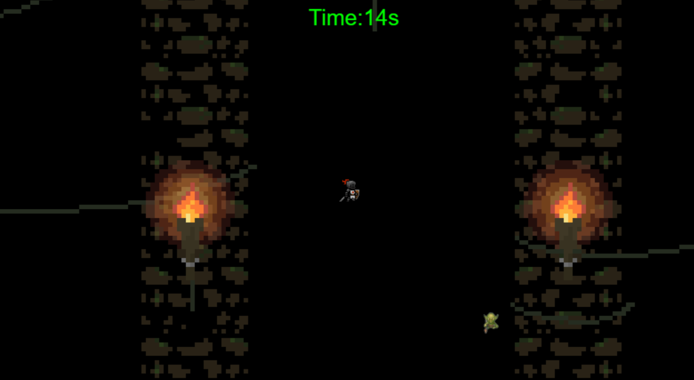

Goblin Game is a project I have been working on through this year for my freedom project. I had to develop this game by learning a java script tool on my own. For my game, goblin game, I created a roguelike game that revolved around surviving as long as you can and killing goblins.
My game was inspired by a game called survivor.io where you go through waves and waves of monsters coming from every direction. It was also inspired by a show called goblin slayer where the main character only kills goblins. This game was created with the intention of being a stress reliever as you just go around fighting goblins.
Throughout this project, I have had multiple problems. One of them being the hitbox for my knight character. The problem I had with the hitbox was that It was constantly in a different spot compared to the slash animation when I used the attack. I spent so long trying to change hitbox of the slash animation when I could have just created a seperate sprite that would be invisible and would act as the hitbox instead of the animation. I wasted time trying to change something that wouldn't when I could have just found a new solution. Overall, my takeaways from this project are to spend your time wisely because I spent so much time trying to force one solution to work when I could have just found another way to make it work. My next big project is the freedom project for next year and I am planing on using the skills I learned from this year's freedom project to make the next one better.
Link to the gameimage of my game
